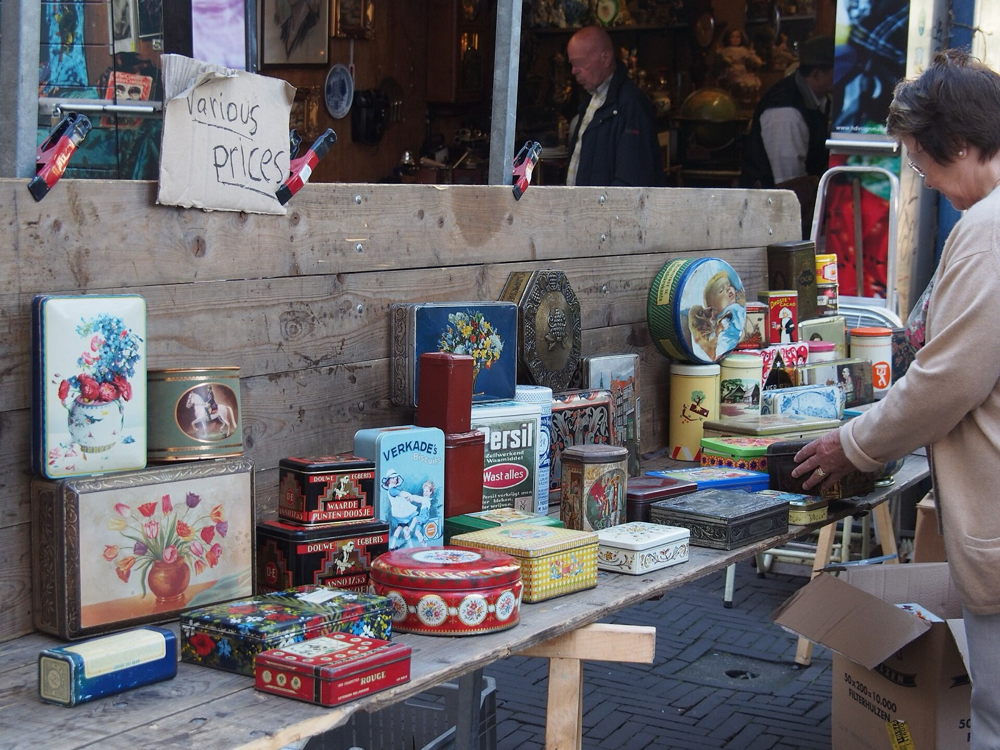
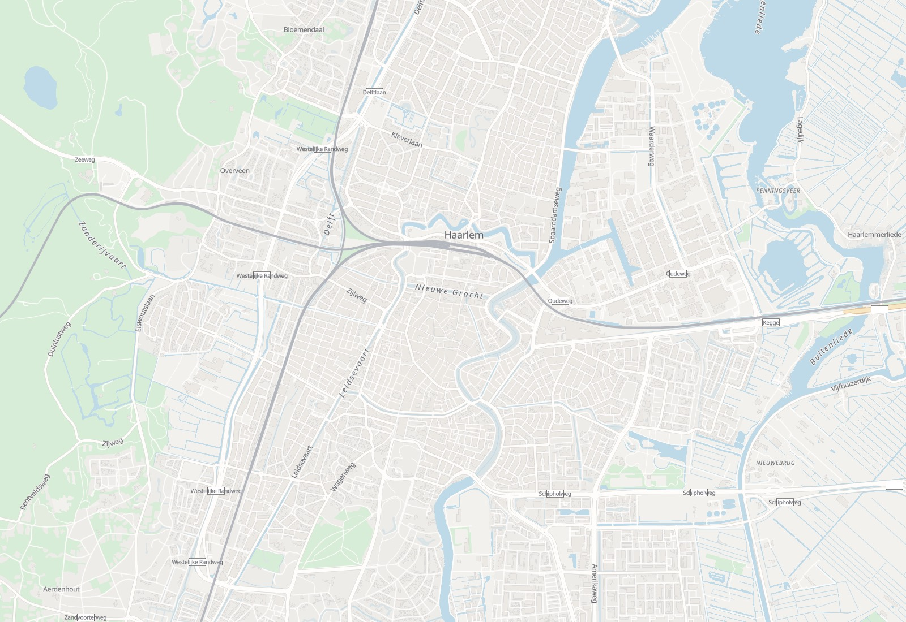
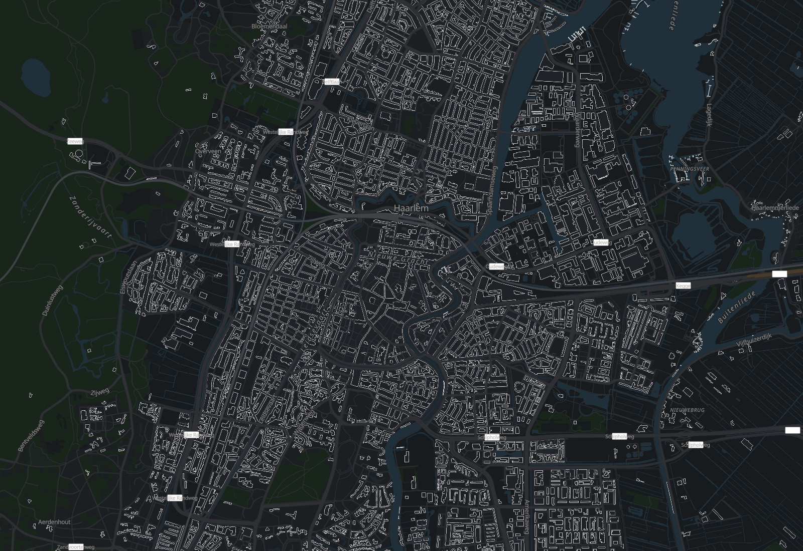
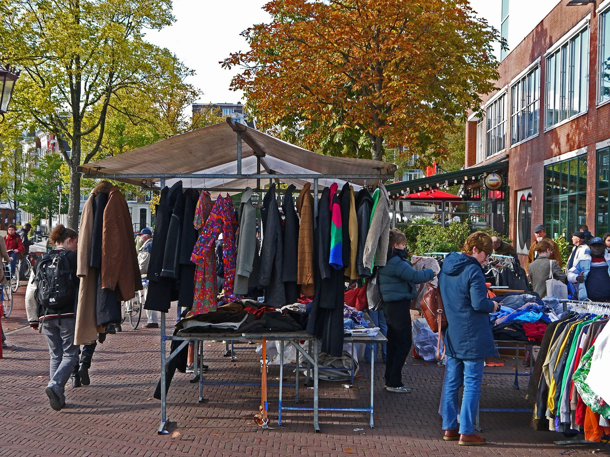
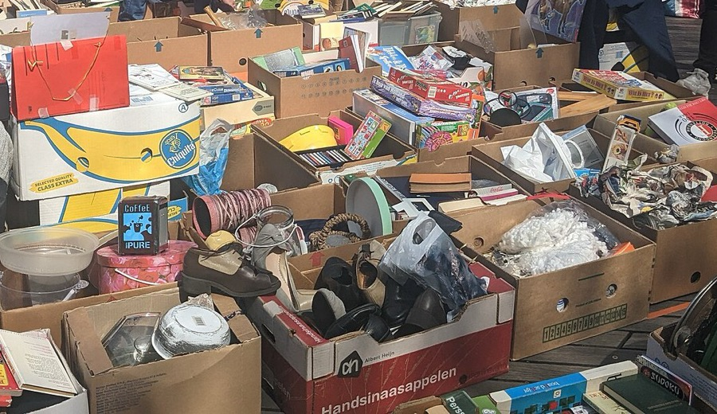

Bijgewerkt vanochtend om 8:00
Kringlopen en rommelmarkten bij jou in de buurt, en wanneer ze open zijn
Je ziet welke kringloop nu open is en welke markten er dit weekend zijn, in heel Nederland. Kies een paar stops, dan zetten wij ze in de beste volgorde, met de tijden erbij. Gratis en zonder account.
3.694 kringlopen en tweedehandswinkels in 539 plaatsen14 markten dit weekendGemaakt door Freek, zonder advertenties


Probeer een zondag in Haarlem
Vijf winkels en een markt in Haarlem, met hun tijden van deze week. Tik op + of op een pin om een stop toe te voegen of weg te halen. Wissel naar zaterdag en kijk wat er verandert.


© OpenStreetMap · OpenFreeMapStops
Vanaf Haarlem Centraal om 10:00, op de fiets
Elke vrijdag staan de markten van het weekend erop. Zet snuffelkaart.nl op het beginscherm van je telefoon, dan werkt hij als een app. Zonder app-winkel en zonder account.
Je dag blijft op je telefoon bewaard. Onderweg zie je welke stop de volgende is en of hij nog open is.
Rommelmarkten dit weekend
Dit weekend staan er 14 in de agenda, allemaal op zondag 8 november. Dit zijn de zes dichtstbij Haarlem. Op de kaart zie je ze rond jouw plek.


Zo sta je niet voor een dichte deur
Bij elke winkel en markt zie je waar de gegevens vandaan komen en wanneer we ze voor het laatst controleerden.
- Tijden met een bronVan de website van de winkel zelf, van OpenStreetMap of van bezoekers.
- Gecontroleerd op een datumWebsites van winkels lezen we elke week opnieuw, de agenda's van markten elke nacht. Horen we dat een markt niet doorgaat, dan staat dat er meestal binnen een half uur op.
- Twijfel zetten we erbijIs een markt alleen aangevraagd bij de gemeente, dan staat er "nog niet bevestigd". Beter dan voor niks fietsen.
- Zaterdag
- 10:00–18:00
- Zondag
- 12:00–18:00
- Maandag
- 12:00–18:00
Van de website van de winkel(punt 1), gecontroleerd op 2 november(punt 2)

,_Rotterdam-Centrum,_Rotterdam_(2023)_01.jpg){kind=link}
Zet straks je garagesale of buurtmarkt op de kaart
Organiseer je een garagesale of de vrijmarkt op Koningsdag? Binnenkort maak je er in een paar minuten een kaart van, gratis. Buren zetten zelf hun adres erop, zonder account. Bezoekers zien alle adressen en de kringlopen in de buurt. Na de markt verdwijnen de adressen weer. We willen het klaar hebben voor Koningsdag 2027.
Kringlopen per plaats
Per plaats zie je wat er vandaag open is en welke markten er in de buurt zijn. Hieronder de grootste; ze staan er alle 539.